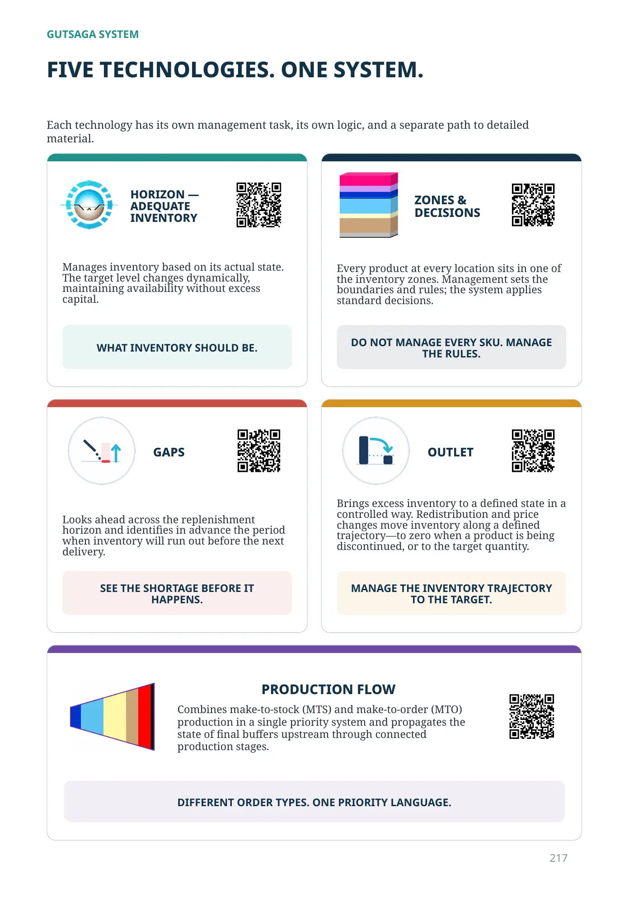

Manages inventory based on its actual state. The target level changes dynamically, maintaining availability without excess capital.
WHAT INVENTORY SHOULD BE.

GUTSAGA SYSTEM
Each technology has its own management task, its own logic, and a separate path to detailed material.
Manages inventory based on its actual state. The target level changes dynamically, maintaining availability without excess capital.
WHAT INVENTORY SHOULD BE.
Every product at every location sits in one of the inventory zones. Management sets the boundaries and rules; the system applies standard decisions.
DO NOT MANAGE EVERY SKU. MANAGE THE RULES.
Looks ahead across the replenishment horizon and identifies in advance the period when inventory will run out before the next delivery.
SEE THE SHORTAGE BEFORE IT HAPPENS.
Brings excess inventory to a defined state in a controlled way. Redistribution and price changes move inventory along a defined trajectory—to zero when a product is being discontinued, or to the target quantity.
MANAGE THE INVENTORY TRAJECTORY TO THE TARGET.
Combines make-to-stock (MTS) and make-to-order (MTO) production in a single priority system and propagates the state of final buffers upstream through connected production stages.
DIFFERENT ORDER TYPES. ONE PRIORITY LANGUAGE.